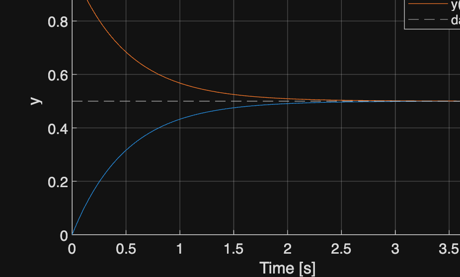
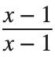
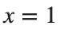
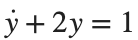
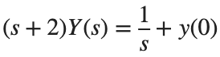
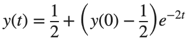

Laplace Transform · 학습
실행 조건
MATLAB · Symbolic Math Toolbox
이번에 배울 내용
시간 영역의 Differential Equation을 변환해 푼 답이 원래 문제를 만족하는지 직접 검증합니다.
전체 흐름
Differential Equation·초기값 → s 영역의 식 → Y(s) → Time Response·잔차
식과 적용 범위를 함께 보기
분수식의 공통 인자를 지우면 계산은 쉬워집니다. 하지만 원래 분모가 0이 되는 값은 계속 제외해야 합니다. 예를 들어

은 에서 1이고,
에서는 원래 식에 값을 대입할 수 없습니다.Differential Equation을 대수식으로 바꾸기

에 Laplace Transform을 적용하면 입력과 Initial State의 영향이 별도 항으로 나타납니다.
초기값이 다를 때의 두 해는 다음과 같습니다.

y(0)=0과 1을 대입하면 Steady State 값은 같고 시작점과 Transient Response는 달라집니다.
초기값이 다른 두 응답
%% Worked example
t=linspace(0,4,401)';
figure; hold on
for initialValue=[0 1]
y=.5+(initialValue-.5)*exp(-2*t);
plot(t,y,'DisplayName',sprintf('y(0)=%g',initialValue));
end
yline(.5,'--'); xlabel('Time [s]'); ylabel('y'); legend; grid on
참고 예제
추가 예제 보기
참고 자료